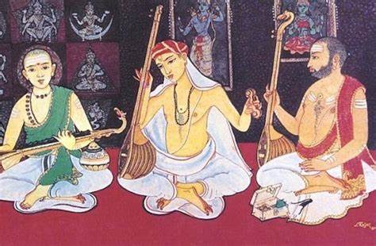
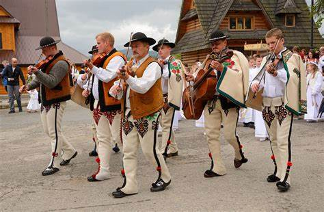
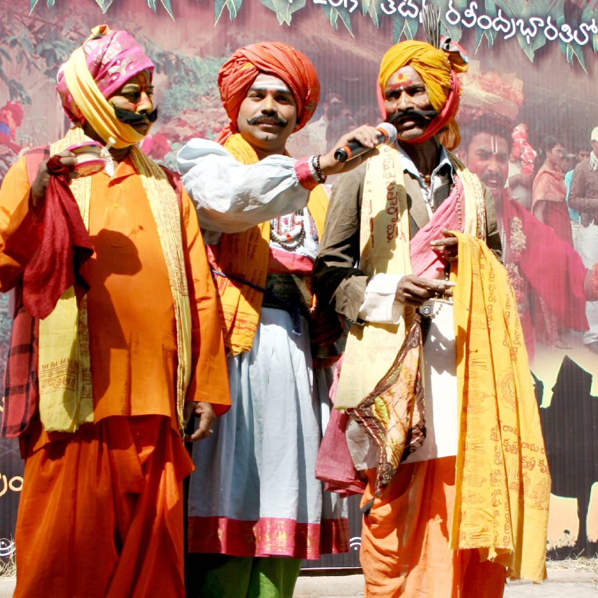
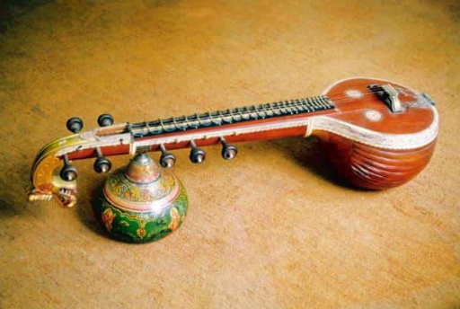

Traditional Music of Andhra Pradesh
Andhra Pradesh has a rich tradition of music that spans various genres, from classical Carnatic music to folk melodies that echo the everyday lives of its people. Here are some highlights of the musical heritage of Andhra Pradesh.

Carnatic Music:
As a prominent center of Carnatic music, Andhra Pradesh has produced many legendary composers and musicians. This classical form is characterized by intricate rhythms, ragas, and a deep spiritual connection.

Folk Music:
Folk music in Andhra Pradesh is diverse, reflecting the state's different regions and communities. Songs often accompany dance forms like Kuchipudi and are sung during festivals and rituals.

Harikatha:
A unique form of storytelling that combines music, dance, and drama, Harikatha narrates stories from epics like the Ramayana and Mahabharata, often focusing on moral lessons and devotion.
